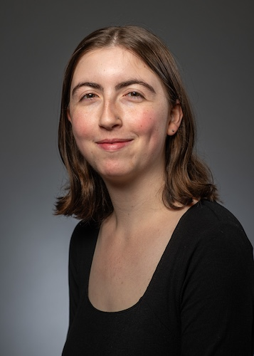

Michal is a senior at UMass Amherst, majoring in English and Economics. Originally from the Boston area, Michal plans to move to Israel after graduation and is in search of professional writing jobs. She has experience in grant writing, copy writing, and development. She is eager to connect with you! She can be contacted at this link.
You can also connect with her on LinkedIn.
Dear Reader, Welcome to my page! My name is Michal Berlove and I am a senior at the University of Massachusetts Amherst, double majoring in English and Economics. Upon graduating, I plan to move to Israel and am seeking professional writing jobs.
My portfolio contains writing samples ranging from grants that I have written and collaborated on to press releases and blog posts that I wrote for my recent internship at UMass Press, UMass’s academic publisher.
In addition to my professional writing experience, I have experience in development and fundraising. I am currently working as a development intern for the Mother’s Milk Bank Northeast, a nonprofit in my hometown that provides vulnerable babies with mothers' breastmilk.
Academically, I am focused on my thesis for the Commonwealth Honors College, exploring the field of decision-making in daily life and how humans experience risk in the real world.
Outside of school and work, I am involved in UMass Hillel, the center of Jewish life on campus. I serve as the president of the Modern Orthodox club, Degel. Our club is open to students of all backgrounds and offers weekly social opportunities, learning opportunities, and a meaningful Shabbat experience. This community has become my home while at college and I am deeply grateful for the friendships that I have made throughout my time here.
Thank you for taking the time to review my portfolio and learn more about me!
All the best,
Michal